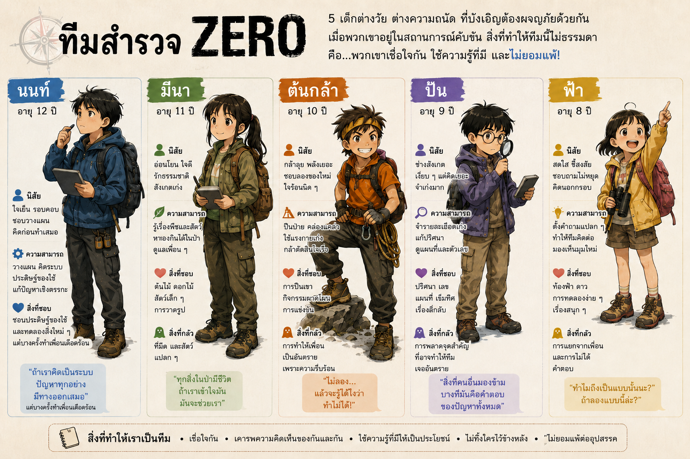

MEET THE TEAM
เด็กทั้ง 5 แห่งทีมสำรวจ ZERO

นนท์ · 12 ปี
สายวางแผนและประดิษฐ์ — ใจเย็น คิดเป็นขั้นตอน แต่บางครั้งคิดนานจนตัดสินใจช้า
มีนา · 11 ปี
สายธรรมชาติ — สนใจชีววิทยา สัตว์และพืช แต่ไม่ถูกกับความมืด
ต้นกล้า · 10 ปี
สายลุย — คล่องตัว ปีนป่ายเก่ง พร้อมทดลองก่อนใคร และบางทีก็ลงมือก่อนคิด
ปั้น · 9 ปี
สายสังเกตและตัวเลข — ชอบแผนที่ เข็มทิศ ตัวเลข และปริศนา
ฟ้า · 8 ปี
เจ้าหนูคำถามเยอะ — ช่างสงสัย คำถามง่าย ๆ ของฟ้ามักนำทีมไปสู่คำตอบสำคัญ